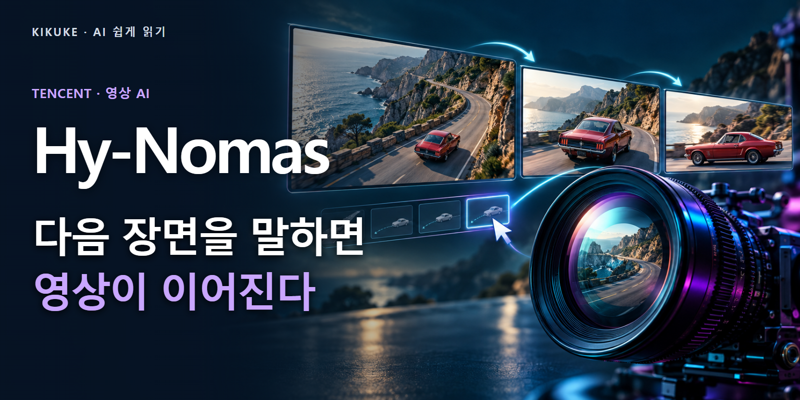

텐센트, 영상을 이어 만들며 장면과 카메라를 바꾸는 AI 공개
중국 텐센트가 영상을 여러 구간으로 이어 만들면서 중간에 장면과 카메라 이동을 바꿀 수 있는 AI 모델 ‘Hy-Nomas’를 공개했다. 문장을 한 번 넣고 완성된 영상만 기다리는 사용법에서, 앞 장면을 참고하며 다음 장면의 방향을 계속 정하는 사용법으로 범위를 넓혔다. 실행·학습 코드와 모델 파일을 내려받을 수 있다. 공식 코드와 소개

예를 들어 숲길을 걷는 여우를 만든 뒤, 다음 구간에서는 길가에 꽃이 피게 하고 카메라를 옆으로 돌리는 식이다. 이 여우와 꽃은 공식 입력 예시에서 나온 장면이다. 첫 장면을 전부 버리고 새 영상을 만드는 대신, 앞서 생성한 내용과 새 지시를 함께 다음 구간에 반영한다. 제작자가 장면의 흐름에 끼어들 자리가 생긴다.
공식 모델 파일의 첫 커밋은 2026년 10월 23일 오후 8시 18분 한국 시간으로 확인된다. 커밋은 파일을 저장한 변경 기록이다. 저장 공간을 처음 만든 날짜보다 실제 가중치가 들어온 기록을 공개 시점의 근거로 삼았다. 가중치는 모델이 학습한 내용을 담은 숫자 파일로, 실행 코드와 함께 있어야 영상을 만들 수 있다. 공식 파일 변경 기록
이전 장면을 들고 다음 장면으로 간다
Hy-Nomas는 앞서 만든 영상의 계산 정보를 보관했다가 다음 구간에 다시 참고한다. 이를 KV 캐시라고 부른다. 독자 입장에서는 ‘앞 장면을 이어 만들 때 쓸 작업 메모’로 생각하면 된다. 여우가 어떤 모습이었고 장면이 어떻게 진행됐는지를 다음 계산에 전달하려는 장치다. 기억이 끝까지 완벽하게 유지되는지는 별도의 시험 문제다.
글로 지시하는 내용과 카메라 이동도 구별된다. 글은 인물·물체·동작·분위기에 대한 요구를 전달하고, 카메라 경로는 어느 쪽을 향해 얼마나 이동할지를 정한다. 예를 들어 인물의 옷을 바꾸는 지시와 인물 주변으로 시선을 돌리는 지시는 영상에서 다른 부분을 바꾼다. 그 둘을 나눠 지정하면 실패한 원인도 더 구체적으로 살펴볼 수 있다.
한 번의 주문 대신, 다음 장면을 계속 정한다
- 처음 장면
인물·배경을 설명해 첫 영상 구간을 만든다. - 앞 장면의 기록
모델이 이전 구간의 계산 정보를 다음 생성에 전달한다. - 새 지시
장면 변화 또는 카메라 경로를 추가한다. - 다음 구간
기존 기록과 새 지시를 반영해 영상을 이어 만든다.
공식 사이트와 GitHub에는 시연 영상과 인터랙티브 데모 연결이 있다. 인터랙티브는 결과를 보기만 하는 대신 사용자의 입력을 받아 다음 결과를 바꾼다는 뜻이다. 공개 페이지와 영상 파일 경로는 확인했지만, 이 기사를 위해 온라인 생성 작업을 실행하거나 시연 전체를 재생 검수하지는 않았다. 결과의 장면 일관성은 직접 비교가 남아 있다. 공식 소개·시연 · 공식 체험 경로
영화의 완성본보다 장면 설계에 가까운 출발점
이 방식은 장면을 정하는 초기 작업과 연결된다. 예를 들어 광고 기획자가 같은 제품을 가까이 보여 주는 구간과 주변 공간을 보여 주는 구간을 나누어 시험할 수 있다. 글과 카메라 지시를 따로 바꾸면, 어느 연출이 설명에 잘 맞는지 비교하기 좋다. 이는 기능에서 생각할 수 있는 활용 예시이며 실제 고객 사례는 아니다.
여기서 ‘월드 모델’이라는 이름도 조심해서 읽을 필요가 있다. 이 모델이 만드는 것은 지시에 따라 이어지는 영상이다. 사진처럼 그럴듯한 방이 나와도 그 방의 모든 치수와 물리 법칙이 맞는지는 따로 확인해야 한다. 게임 속 공간처럼 어디든 정확히 돌아다니는 완성된 3차원 프로그램과는 평가 기준이 다르다.
텐센트는 특정 분야에 맞춰 추가 학습한 시네마틱·로봇용 LoRA도 공개했다. LoRA는 기본 모델 전체를 다시 만들지 않고 일부 추가 파일로 특정 표현을 학습시키는 방법이다. 영화 장면과 로봇 환경을 실험하려는 개발자에게 출발 자료가 생긴 셈이다. 로봇이 현실에서 안전하게 움직인다는 검증 결과까지 포함된 공개는 아니다. 구성 파일의 역할
RTX 4090 한 장에는 다른 준비가 따른다
기본 실행 설정은 GPU 여덟 개를 사용한다. GPU는 영상 생성처럼 많은 계산을 병렬로 처리하는 장치다. 별도로 공개된 RTX 4090 한 장용 설정은 데이터를 더 작게 저장하고, 당장 쓰지 않는 모델 부분을 컴퓨터의 주 메모리로 옮긴다. 이 이동을 CPU 오프로딩이라고 한다. 장치 하나의 부담을 다른 메모리와 전송 시간으로 나누는 방법이다.
아래 그래프는 그중 영상 생성 핵심 파일 하나를 비교한다. 표준용 파일과 INT8 파일의 크기는 각각 약 34.21GB와 9.06GB다. INT8은 숫자를 더 작은 형식으로 저장하는 방식이다. 내려받을 양이 줄어드는 모습은 확인할 수 있지만, 이것은 전체 설치 용량이나 영상 생성 속도의 비교가 아니다. 디코더 등 다른 구성 파일도 필요하다. 공식 모델 파일 목록
핵심 영상 모델 파일은 작아졌다
Hy-Nomas 증류 DiT 파일 · 십진 GB · 축 0~40GB
전체 설치 용량·GPU 메모리·속도를 뜻하지 않음
실행 중에는 과거 장면을 담은 기록도 메모리를 차지한다. 한 장용 설정은 GPU에서 사용하는 과거 기록을 제한하고 더 오래된 기록을 CPU 쪽에 보관한다. 그래서 그래픽카드 용량만 보는 것으로 준비가 끝나지 않는다. 충분한 시스템 RAM이 필요하고, 해상도와 한 구간의 길이에 따라 순간적으로 필요한 GPU 메모리도 달라진다. 구체적인 최소 RAM 수치는 공식 안내에 제시되지 않았다.
또 하나 나뉘는 부분은 웹 체험 화면이다. 체험 화면에서 받은 말을 생성용 지시로 정리하는 Nomas-PE는 별도 서비스이며 추가 실행 자원이 필요하다. 따라서 ‘RTX 4090 한 장으로 모든 대화형 서비스를 운영한다’고 소개할 수 없다. 공식 한 장 지원은 영상 추론 부분에 적용된다. 추론은 학습을 마친 모델로 새 결과를 만드는 과정이다. 웹 데모와 자원 조건
공식 설치 안내는 리눅스와 NVIDIA 환경을 기준으로 한다. 필요한 프로그램을 묶어 실행하는 Docker 경로와 직접 설치하는 경로가 제공된다. 윈도우에서 일반 편집 프로그램처럼 바로 열어 쓰는 설치 파일을 제공한 것은 아니다. 개인 창작자보다 장비와 실행 환경을 구성할 수 있는 개발자가 먼저 시험하기 쉬운 공개다. 설치 환경
24FPS는 결과 영상의 재생 규격이다
공식 기본 출력은 가로 1,280·세로 720픽셀, 초당 24장의 화면이다. 초당 화면 수인 24FPS는 완성된 영상을 재생할 때의 규격이다. 컴퓨터가 1초 만에 영상 1초를 만들어낸다는 속도 표기가 아니다. 실제 대기 시간은 장비, 화면 크기, 구간 길이와 기록 관리 설정에 영향을 받는다.
텐센트는 280개 사례로 구성된 Hy-Nomas-Bench도 공개했다. 여기에는 여러 번의 문장 지시, 카메라 이동, 둘을 번갈아 쓰기, 공간 기억을 시험하는 자료가 들어 있다. 예컨대 장면을 돌아본 뒤 원래 위치로 돌아왔을 때 공간이 얼마나 유지되는지를 점검할 기반이다. 공개 시험 자료는 개발자가 같은 문제로 비교할 수 있게 하지만, 시험지를 공개한 일과 높은 점수를 얻은 일은 구분된다. 공식 평가 자료
현재 읽은 공식 소개에는 독립 재현 성능표가 없고 기술 보고서도 공개 예정으로 표시돼 있다. 한국어 지시의 이해도를 따로 측정한 결과 역시 확인되지 않았다. ‘한국어로 자연스럽게 대화하며 실시간 영상을 만든다’는 경험담으로 확대하기에는 근거가 부족하다. 지금 확인된 성과는 작동 코드·가중치·시험 자료와 장비별 실행 경로의 공개다.
공개 조건을 확인하고 작은 장면부터 비교한다
텐센트가 공개한 Hy-Nomas 코드와 가중치는 Apache 2.0 조건을 따른다. 상업적 이용과 수정·배포를 허용하는 라이선스지만, 저작권·라이선스 고지 등의 의무는 남는다. 함께 쓰는 타사 모델과 구성요소에는 각자의 조건이 적용된다. 원본 자료의 이용 허락도 모델 라이선스와 별도로 다룰 부분이다. 공식 라이선스 원문
도입 판단의 출발점은 긴 영화를 한 번에 맡기는 일이 아니다. 같은 장소에서 짧은 지시를 두세 번 바꾸고, 물체와 카메라의 변화가 지시를 따르는지 확인하는 시험이 먼저다. 그때 준비한 장비와 소요 시간을 함께 기록하면, 시연의 인상과 자기 작업의 비용을 나눠 판단할 수 있다.
Hy-Nomas는 다음 장면을 계속 지정할 수 있는 영상 제작 실험을 공개 파일로 가져왔다. 한국 창작자에게 당장 완성형 편집기가 생긴 것은 아니지만, 개발자와 함께 연출을 시험할 재료는 구체적으로 늘었다. 핵심 변화는 앞 장면을 들고 다음 장면으로 넘어가며 제작자가 방향을 바꿀 수 있다는 점이다.
출처와 더 읽을 자료
대표 이미지는 기사 내용을 설명하기 위해 AI로 만든 편집 삽화다. 회사명과 핵심 문구는 별도로 배치했으며, 실제 인물의 현장 사진이나 제품 실행 화면이 아니다. 생성 그림은 성능·사건의 근거로 사용하지 않았다. 본문의 도표·화면·시연은 각 자료에 표시한 출처와 조건을 따른다.